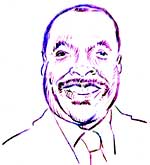

This is an archived copy of History Matters, provided by the Roy Rosenzweig Center for History and New Media. To explore this content in a new interface, visit Who Built America?.


Maurice Butler teaches U.S. history at Theodore Roosevelt Senior High School in the District of Columbia. He has been teaching in the District of Columbia Public School system since 1974. At Roosevelt High School, he is the Change Facilitator, a DC Area Writing Project Writing Consultant, the head Tennis Coach, one of the sponsors for the school newspaper, and he is the coordinator of the 9th Grade Prep Academy. In addition to teaching, he is currently pursuing his Ph.D. at Berne University in Curriculum and Instruction.1. When did you start teaching and where have you taught?
I started teaching in 1974 at Garnett Patterson Junior High School. In 1975 I came to Theodore Roosevelt High School, but was transferred because of seniority. I went to Shaw Junior High School in 1978 and came back to Roosevelt in 1979. Then, in 1980, I got riffed when Reagan came into office and they cut 743 teachers, so I went to a private school where I taught for two years. The pay was low, so I worked as a production manager in private industry for two years. I hated it and came back to the D.C. public schools in 1984.
2. What is your favorite course to teach? Why?
U.S. History is my favorite course to teach; African American studies is my second favorite. I love U.S. history, and I have developed many programs and activities that are performance based and that get students really excited about history. I always start with a unit entitled “Social Studies skills.” The first thing I do is teach students how to write history—learning how to write history from analyzing photographs, documents, timelines, artifacts, and architecture. By the end of the unit, we would do a project where students learn to write their own history using primary sources. One year I had the students write a play comparing a teenage life in the 1950s and 1960s to teenage life in the 1980s and 1990s. The parents had to teach them dance-steps and show the clothing of the 1950s and 1960s. We performed the play in front of the parents, recreating their lives.
After learning how to write history, we would go directly to the units of American history. For example, I have taught a unit called “How To Become Rich in a Capitalistic Society. ” Students had to design business plans that would make them rich in 20 years. The next unit would be on “Depression America”—I always hated that part of history, Depression America, the New Deal, alphabet soup, so I tried to find a way that I could enjoy teaching that unit. I believe that if you don’t enjoy what you teach, you don’t really do a good job.
Without defining the concept of Depression, we discussed the economic problems in Washington, DC. I had my students get together in groups and asked them to find solutions to the problems—poverty, unemployment, overproduction and so forth—and then they did a comparative analysis between their solutions and FDR’s solutions. We found there were some striking similarities between what they came up with and what FDR came up with. This made them feel good—they designed the New Deal. I also asked them to perform soliloquies about individuals suffering from the Great Depression.
The units on “The Rise of Big Business,” including the Gilded Age and “Becoming Rich in a Capitalistic Society” worked well, too. Instead of giving students information on John D. Rockefeller and the robber barons, their task was to look at these individuals to see how they became wealthy and how they would reproduce the same effort, do it themselves. So, instead of just giving them a boring assignment, they were actually studying Rockefeller and figuring out what he did and how he did it. We looked at the principles such as finding out the societies' wants and needs, locating the capital, eliminating the middle man, etc. One young woman came up with a drug she named “cramps to be gone. ” Another person came up with the idea of fingernail polish that changed with the outfit that one was wearing. Students came up with a lot of interesting ideas, such as using a conveyor belt to solve DC traffic problems.
3. What are your most important goals in teaching the survey course?
I always tell my students that I don’t care if they remember everything, but they had to know how to locate information, know how to think, and had to be organized. I feel that as long as they know how to get information, it doesn’t really matter whether they memorize a lot of stuff. I want to give students the ability to become informed decision makers and problem solvers.
In a test, for example, I would make them Mayor of Washington, DC, give them five social problems, and ask them to figure out a strategy to solve these problems. History, in this way, becomes more meaningful and is connected to their lives. History is not just about what happened and when it happened, but also about why it happened, and how you can apply that knowledge. In addition, I think it is important that students learn how to WRITE effectively and learn to love writing and to “DO” history and not merely to study it.
4. How do you organize your survey course?
I organize my U.S. History course thematically, after the initial unit on writing history, using the following headings:
The Closing of the American Frontier (Whose Land Is It Anyway?)
The Rise of Big Business (How To Become Rich in a Capitalistic Society)
Depression (It’s a Hard Knock Life)
Immigration (The Good, The Bad, The Ugly)
Bigotry (A Method of Control)
American Foreign Policy (Conspiracy Theory)
War (What Is It Good For?)
Post War America (Issues and Answers)
Political Corruption (Does The System Work?)
5. What are the most effective assignments you have used?
What happens when you are a teacher is that teachers become like parents. And after a while, kids turn off parents. You tell them certain things, you ask them to do certain things, and they don’t give you their best efforts. However, when you start doing things that other people have to look at and evaluate, when you go outside the classroom, then they are willing to work harder. Towards the end of my teaching, I began to do more things that other people would look at, this is why I call it authentic. At the end of the year, each student teaches a 45 minute lesson. The students select topics that they would like to teach, such as Watergate, Irangate, Japanese Internment, Civil Rights.
A very successful assignment was the anthology “Encounters with Bigotry, ” a collection of poems and stories relating personal experiences of African American and Hispanic kids to the Holocaust. The book was published with the assistance of the United States Holocaust Memorial Museum that is being used at the Holocaust Memorial Museum in Washington, DC, to this day. When students turned in a piece of writing that did not meet the rubric and the standard, it wasn’t accepted. Once students began to realize that this was really important, they did a good job and started putting in extra effort. After we put the anthology together, my students went to the Holocaust Museum and lectured about the process and we had a book signing.
We participated in a lot of contests one contest was called “Kids Write Through It” where students wrote about how they overcame adversity in their lives. I made all my students submit stories and four of my students got published in that book. One of my students won the contest and received got $1,000. Afterwards my students realized that writing can earn you money.
I also began having competitive assignments between classes. Giving final exams was always a pain, and I remember one year I had a contest where I put the information that we were reviewing for a final exam in a game-show format. I had each class select five students to represent their class. Each class had to quiz their team and get them ready for a competition against my other classes. The reward —whichever team won wouldn’t have to take a final exam. This assignment was great because the class actually had to select their contestants, five participants, and they also had to get the kids ready for the contest. So they had to design review questions and quiz the contestants. I divided the class into groups of five and each group was supposed to take a particular concept and quiz the contestants on that theme. Each contestant then rotated from group to group. Then they would call each other at home in order to prepare. They actually developed study groups. When we held the competition, it turned out to be a big event. Some of my former students came to watch. The team that won, of course, was elated, because they didn’t have to take that final. The team that lost was upset and they wanted to beat the kid up who lost. But when the test came, the team was ready and the lowest grades were in the C range. This was, again, a case when other people had to evaluate them, something that required an authentic assessment.
6. How has your teaching experience changed over time?
We are lifelong learners. I think as I began to observe other teachers, I learned how to do things better and this is invigorating for me. If you have been teaching for many years, things get stale. I don’t see how teachers can sit down and do the same thing over and over again, for years and years. That would bore me to death. So I was constantly looking for new things.
I remember watching a TV program, it was 60 Minutes or something, on education in China. I never forgot it. It showed a math class and on the first day of class, the teacher divided the kids into groups. He gave them a complicated problem, with no instruction, and asked them to solve it. The kids sat down and worked and worked, and the teacher sat down behind his desk and didn’t do anything but observe. The students put their heads together to solve the problem and it took them a week to actually solve it.
I thought it was kind of dangerous because the teacher provided so little guidance, but I tried it. This is where my idea for the depression project came from. Pose a problem, put it on the board, assign groups, and ask students to solve it. It didn’t take a week, but maybe three or four days. I would float around. And it was fantastic because it worked. It forced me to be a facilitator as opposed to an upfront teacher. The more I began to look, the more I began to alter my teaching. I used to be a straight up front teacher, stand in front of the class: “You know this is what we are going to dodo it and learn! ” More and more, I have become a facilitator.
I also began to get into multiple intelligences and I began to alter a lot of my activities — to include more poetry, more art. I’ll never forget a class I taught with 53 students, including a group of physically challenged students, several English-as-a-Second-Language (ESL) students, a group of athletes. The students were always segregating themselves, and there were all these different groups. I’ll never forget one student in a wheelchair who couldn’t read. He was in a program where you don’t get a grade, you get a certificate of attendance. He always asked for the textbook, but he never gave me any work to evaluate. One day I met him in the hallway and asked him: How am I supposed to evaluate you, you never say anything and you never give me work. And he said: “I remember anything you said. ” Then I asked him some questions and it turned out this kid had a phenomenal memory. He remembered everything I said, and I felt bad because in a large group of 53 students, it’s really hard to give students individualized instruction. I felt badly because I looked at this kid and I thought: “I have not been dealing with him in the way he learns.” And as I began to read more about multiple intelligences, I began to incorporate more activities for multiple learning styles — poetry, collages, drawings — all of these activities are elements of society that you can integrate in your teaching.
7. What is your most memorable teaching experience?
I have had numerous memorable teaching experiences, but the ones that stand out involve student reactions to my style. If I had to select one it would be my principal’s reaction when he visited one of my classes. I had a United States history class with an enrollment of 53 students. There was a serious problem with truancy at the school all the time. One Friday afternoon, I was teaching the class and my principal walked in at about ten minutes to 3:00. There were 48 out of 53 students present in class and actively engaged. My principal was amazed at the number of students in attendance. He stopped the activity and asked the students why so many of them had come to class. Many of them responded that they loved coming to my class and some even stated that this was the only class they attended. Needless to say, I felt a sense of accomplishment that my hard work was paying off.
Another experience was when a group of parents came to me during a Parent Teacher Association meeting and said: “Oh, you are the one. ” "The one? “ I asked. ”The one who makes my child look through all that stuff, ask me how to dance. “ That was the assignment where they had to learn the history of their parents which led to a conversation. And their parents took them down memory lane. It was a positive assignment because it started communication between parents and their children. So that night, when parents told me ”You are the one. “ I thought: ”Wow it worked! "
Interview conducted by Katja Hering; completed in May 2003.